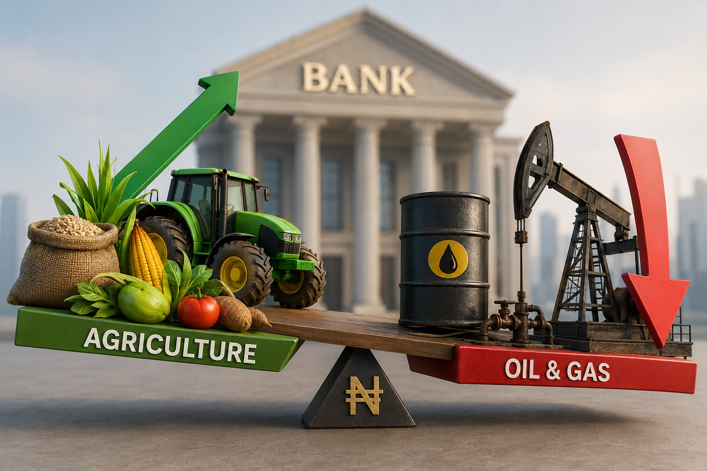

Nigerian Banks Are Starting to Look at Agriculture Differently
Something interesting is happening with where Nigerian banks are putting their money.
For years, if you wanted to see where banks were heavily exposed, oil and gas would almost certainly be somewhere near the top of the list.
But now, agriculture is quietly getting more attention.

According to the latest data from the Central Bank of Nigeria, banks increased their lending to agriculture from ₦3.71 trillion in January 2026 to ₦3.86 trillion in March.
₦150 billion more going into agriculture in just three months.
Now compare that with oil and gas.
Bank lending to the sector dropped from ₦10.91 trillion in January to ₦10.58 trillion in March.
That is a decline of about ₦335 billion.
Before you start thinking Nigerian banks have suddenly abandoned oil for farming, not quite.
Oil and gas still has almost three times the amount of bank credit going to agriculture.
But the direction is what is interesting.
Agriculture is going up.
Oil and gas is coming down.
And this is happening at a time when Nigeria badly needs more money flowing into food production, processing and the wider agricultural value chain.
What More Financing Could Mean
Think about what more financing could mean for the sector.
- A farmer who can actually access affordable credit can buy inputs on time instead of reducing the size of the farm.
- A processor can buy equipment instead of processing everything manually.
- An agribusiness can expand its storage capacity instead of watching produce spoil.
- A livestock farmer can scale production.
- A mechanisation business can buy more equipment and serve more farmers.
Nigeria has never really had a shortage of agricultural potential. The bigger problem has often been turning that potential into productive businesses, and access to money is a big part of that.
The Bigger Picture
But agriculture isn't the only sector seeing changes in bank lending.
- Power and energy credit increased from ₦1.30 trillion in January to ₦1.61 trillion in March.
- Real estate jumped from ₦4.67 trillion to ₦6.29 trillion.
- Manufacturing went the other way. Credit to manufacturers fell from ₦6.57 trillion in January to ₦5.77 trillion in March.
So banks are not simply throwing more money at every sector. The distribution is changing.
Overall sectoral private-sector credit increased from ₦57.41 trillion in January to ₦59.74 trillion in March.
And agriculture got some of that increase.
The ₦150 Billion Question
It may not look dramatic yet. ₦150 billion is also small compared with the amount still going into oil and gas.
But for a sector that has spent years complaining about limited access to finance, the movement is still notable.
Now the question is whether this continues.
Because getting more money into agriculture is one thing.
Getting that money to the right farmers, processors and agribusinesses, at a cost they can actually afford, is another matter entirely.
Source: Central Bank of Nigeria (CBN) Quarterly Statistical Bulletin, March 2026